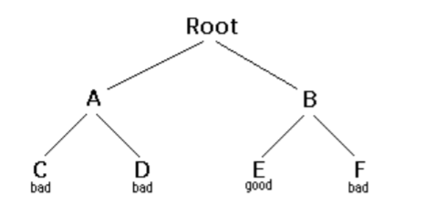

The usual scenario is that you are faced with a number of options, and you must choose one of these. After you make your choice you will get a new set of options; just what set of options you get depends on what choice you made. This procedure is repeated over and over until you reach a final state. If you made a good sequence of choices, your final state is a goal state; if you didn't, it isn't.
Conceptually, you start at the root of a tree; the tree probably has some good leaves and some bad leaves, though it may be that the leaves are all good or all bad. You want to get to a good leaf. At each node, beginning with the root, you choose one of its children to move to, and you keep this up until you get to a leaf.
Suppose you get to a bad leaf. You can backtrack to continue the search for a good leaf by revoking your most recent choice, and trying out the next option in that set of options. If you run out of options, revoke the choice that got you here, and try another choice at that node. If you end up at the root with no options left, there are no good leaves to be found.
This needs an example
In this example we drew a picture of a tree. The tree is an abstract model of the possible sequences of choices we could make. There is also a data structure called a tree, but usually we don't have a data structure to tell us what choices we have. (If we do have an actual tree data structure, backtracking on it is called depth-first tree searching.)
Notice that the algorithm is expressed as a boolean function. This is essential to understanding the algorithm. If solve(n) is true, that means node n is part of a solution--that is, node n is one of the nodes on a path from the root to some goal node. We say that n is solvable. If solve(n) is false, then there is no path that includes n to any goal node.
Hence, to decide whether any non-leaf node n is solvable (part of a path to a goal node), all you have to do is test whether any child of n is solvable. This is done recursively, on each child of n. In the above code, this is done by the lines
Eventually the recursion will "bottom" out at a leaf node. If the leaf node is a goal node, it is solvable; if the leaf node is not a goal node, it is not solvable. This is our base case. In the above code, this is done by the lines
The backtracking algorithm is simple but important. You should understand it thoroughly. Another way of stating it is as follows:
Backtracking is a rather typical recursive algorithm, and any recursive algorithm can be rewritten as a stack algorithm. In fact, that is how your recursive algorithms are translated into machine or assembly language.
Starting from the root, the only nodes that can be pushed onto the stack are the children of the node currently on the top of the stack, and these are only pushed on one child at a time; hence, the nodes on the stack at all times describe a valid path in the tree. Nodes are removed from the stack only when it is known that they have no goal nodes among their descendents. Therefore, if the root node gets removed (making the stack empty), there must have been no goal nodes at all, and no solution to the problem.
When the stack algorithm terminates successfully, the nodes on the stack form (in reverse order) a path from the root to a goal node.
Similarly, when the recursive algorithm finds a goal node, the path information is embodied (in reverse order) in the sequence of recursive calls. Thus as the recursion unwinds, the path can be recovered one node at a time, by (for instance) printing the node at the current level, or storing it in an array.
Here is the recursive backtracking algorithm, modified slightly to print (in reverse order) the nodes along the successful path:
All of these versions of the backtracking algorithm are pretty simple,but when applied to a real problem, they can get pretty cluttered up with details. Even determining whether the node is a leaf can be complex:
for example, if the path represents a series of moves in a chess endgame problem, the leaves are the checkmate and stalemate solutions
To keep the program clean, therefore, tests like this should be buried in methods. In a chess game, for example, you could test whether a node is a leaf by writing a gameOver method (or you could even call it isLeaf). This method would encapsulate all the ugly details of figuring out whether any possible moves remain.
Notice that the backtracking altorithms require us to keep track, for each node on the current path, which of its children have been tried already (so we don't have to try them again). In the above code we made this look simple, by just saying for each child c of n. In reality, it may be difficult to figure out what the possible children are, and there may be no obvious way to step through them. In chess, for example, a node can represent one arrangement of pieces on a chessboard, and each child of that node can represent the arrangement after some piece has made a legal move. How do you find these children, and how do you keep track of which ones you 've already examined?
The most straightforward way to keep track of which children of the node have been tried is as follows: Upon initial entry to the node (that is, when you first get there from above), make a list of all its children. As you try each child, take it off the list. When the list is empty, there are no remaining untried children, and you can return "failure".This is a simple approach, but it may require quite a lot of additional work.
There is an easier way to keep track of which children have been tried, if you can define an ordering on the children. If there is an ordering, and you know which child you just tried, you can determine which child to try next.
For example, you might be able to number the children 1 through n, and try them in numerical order. Then, if you have just tried child k, you know that you have already tried children 1 through k-1, and you have not yet tried children k+1through n. Or, if you are trying to color a map with just four colors, you can always try red first, then yellow, then green, then blue. If child yellow fails, you know to try child green next. If you are searching a maze, you can try choices in the order left, straight, right (or perhaps north, east, south, west).
It isn't always easy to find a simple way to order the children of a node. In the chess game example, you might number your pieces (or perhaps the squares of the board) and try them in numerical order; but in addition each piece may also have several moves, and these must also be ordered. You can probably find some way to order the children of a node. If the ordering scheme is simple enough, you should use it; but if it is too cumbersome, you are better off keeping a list of untried children.
For starters, let's do the simplest possible example of backtracking which is searching an actual tree. We will also use the simplest kind of tree, a binary tree.
A binary tree is a data structure composed of nodes. One node is designated as the root node. Each node can reference (point to) zero, one, or two other nodes, which are called its children. The children are referred to as the left child and/or the right child. All nodes are reachable (by one or more steps) from the root node, and there are no cycles. For our purposes, although this is not part of the definition of a binary tree, we will say that a node might or might not be a goal node, and will contain its name. The first example in this paper (which we repeat here) shows a binary tree.
Here's a definition of the BinaryTree class:
Next we will create a TreeSearch class, and in it we will define a method makeTree() which constructs the above binary tree.